轮胎的修理
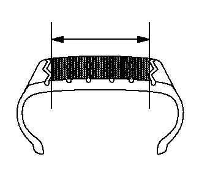
- 轮胎更换可能会很危险并且应由经过训练的专业人员使用适当的工具和程序进行。务必阅读并理解制造商写在用户手册或铸在轮胎侧壁的警告事项。
- 在维修轮胎时，不配戴适当的眼耳保护装备可能会严重损伤眼睛和耳朵。
- 向座椅胎圈中充气切勿超过275 kPa（40 lb）。
- 充气时，切勿站立、倚靠在总成上，或将手伸向总成。
注意:子午线轮胎上的可修理部位。
- • 切勿修理已磨损至胎面磨损指示器显示剩余厚度为1.59 毫米（2/32 英寸）的轮胎。
- • 切勿修理胎面穿孔大于6.35 毫米（1/4 英寸）的轮胎。
- • 无论是否允许修理，切勿更换内胎。
- • 切勿修理外胎内陷的轮胎（车轮上，仅限于堵塞）。
- • 每次都必须将轮胎从车轮上拆下，以进行正确的检查和维修。
- • 不管用何种方法修理，都必须密封内衬层，并填补受损处。
- • 有关维修片应用程序和推荐的维修工具/维修材料信息，请咨询维修材料供应商/制造商。
维修轮胎穿孔的三个基本步骤：
- 1.将轮胎从车轮上拆下，以进行检查并维修。
- 2.填补受损处（穿孔处）防止湿气进入。
- 3.用维修片密封内衬层以防漏气。
外部检查
- 1.拆卸前，用水和肥皂液检查轮胎表面、气门和车轮，以确定漏气的位置。标记受损部位，并取下气门芯，将轮胎里的气全部放出。
- 2.将轮胎从车轮上拆下，并将轮胎放在光照良好的扩胎机上。
内部检查
-
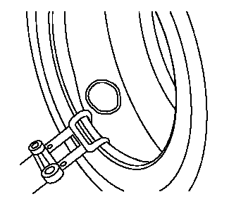1.扩展胎圈，用轮胎笔在穿孔处作标记。
- 2.检查内胎是否有内部受损迹象。
- 3.去除刺穿物，标记刺穿的方向。
- 4.将钝锥探入受损处，以确定受损程度和刺穿方向。
- 5.清除受损处的所有松动异物。
- 6.不要修理穿孔超过6.35 毫米（1/4 英寸）的轮胎。
清洁
-
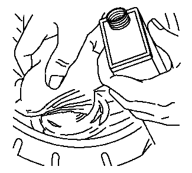1.用正确的衬层清洁剂、清洁布和刮刀彻底清理穿孔处周围。此步骤可清除污物和模具润滑剂，以确保粘合正确和磨光工具不受污染。
- 2.参见产品或制造商的“材料安全数据表”信息，并遵循指南进行处理和报废。
清洁受损轮胎槽
-
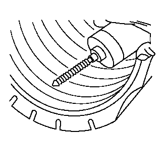1.使用合适的手动铰刀、硬质合金铣刀或钻头，从轮胎内部铰扩穿孔槽以便清理受损处。
- 2.拆下衬层表面凸出的钢丝帘布，以免损坏修理部件。
- 3.有关推荐的扩铰工具信息，请咨询维修材料供应商。
填补受损处
-
1.必须填补受损轮胎槽，以支撑修理片并防止湿气进入轮胎纤维和钢丝帘布。

- 2.组合修理/堵塞片可跳过此步骤。按照维修材料制造商的建议，粘合受损的轮胎槽，并用维修堵塞片从轮胎内侧填补受损处。无需拉长堵塞片，将其切割至稍高于内胎表面。
- 3.有关维修材料的正确选择，请咨询维修材料供应商。
维修片选择
-
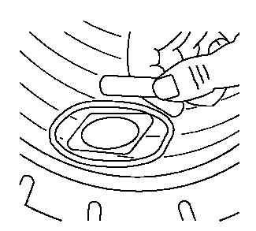1.将维修片置于受损处上方的正中作为参照，画一个大于维修片的轮廓，以免磨光时抹掉轮胎笔标记。注意:在该操作步骤期间不要安装维修片。
- 2.取下维修片。
- 3.切勿搭接原先的维修片或多个维修片。
- 4.有关维修片的正确选择，请咨询维修材料供应商。
磨光
-
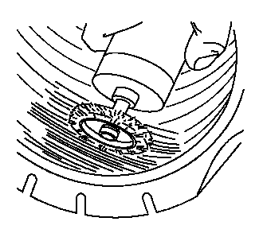1.使用低速磨光工具（细钢丝刷或磨砂锉刀）彻底并均匀地在标记区域内磨光，以免污染或抹掉轮廓线。
- 2.磨光至表面平整光滑（磨光纹理RMA 1号或2号）。
- 3.小心不要划伤内衬层或露出胎体纤维。
- 4.用真空吸尘器吸除磨光产生的灰尘。
- 5.有关正确的磨光工具的信息，请咨询维修材料供应商。
粘合
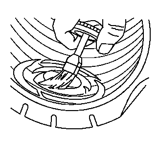
按照维修材料制造商的程序涂抹化学粘合剂。
维修片的应用
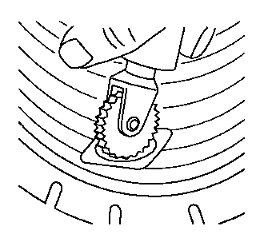
安装维修片时，轮胎必须处于松弛状态。不要过度扩张胎圈。
- 1.若适用，则安装维修片并正确定位。
- 2.将维修片置于受损处上方正中，用缝合工具将其由中心向外完全缝上。
-
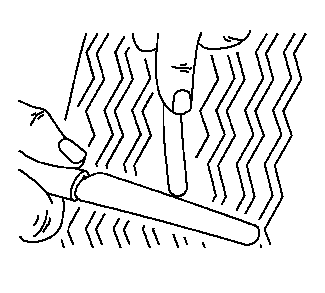3.注意不要拉伸堵塞材料，将其切割至与外胎面齐平。
两件式塞子和维修片
- 1.将堵塞片从受损处拉出，直至维修片刚好接触到内衬层。完全缝合。
- 2.更多的安装指南，按照维修材料制造商的建议进行。有关正确的缝合工具的选择，请咨询维修材料供应商。
组合维修/堵塞片
安全架
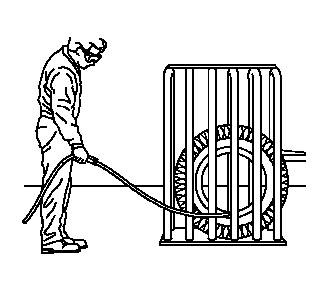
对于某些泄气保用轮胎和高性能轮胎，可能需要施加275 千帕（40 磅力/平方英寸）以上的压强才能使胎圈就位。在这种情况下，必须使用轮胎安全架。其专用维修方法请咨询轮胎制造商。
最终检查
-
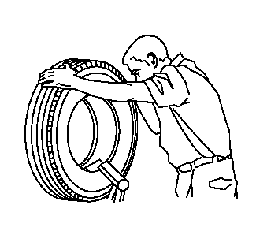1.轮胎重新安装并充气后，用水和肥皂液检查胎圈、维修处和气门是否漏气。
- 2.如果轮胎仍然漏气，必须拆下轮胎并重新检查。
- 3.平衡轮胎和车轮总成。参见轮胎和车轮总成平衡－车下。